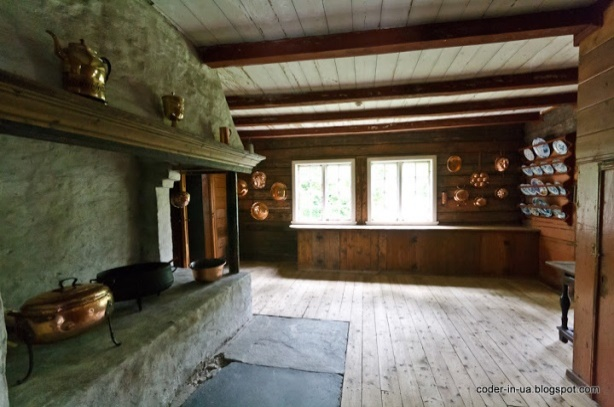

В Норвегии находится огромное количество различных музеев. Каждый турист найдет музей исходя из своих предпочтений. В стране есть музеи как закрытые так и музеи под открытым небом и различные парковые ансамбли. Скульптуры, ичторические, национальные , музеи современного искусства и даже Нобелевский центр мира - порадуют Вас своими экспозициями в любое время года.